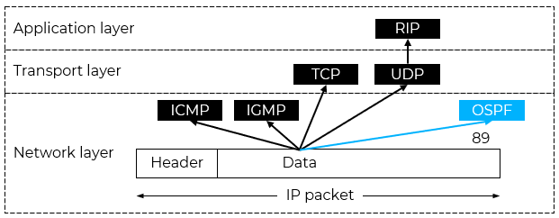
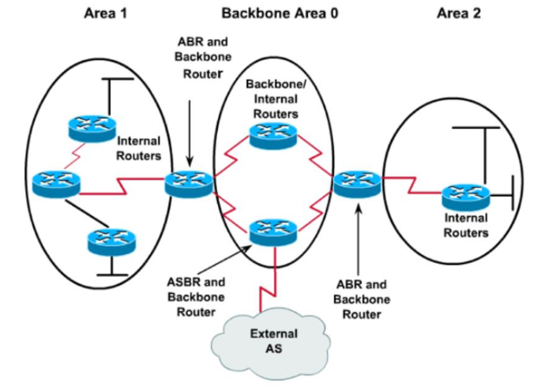
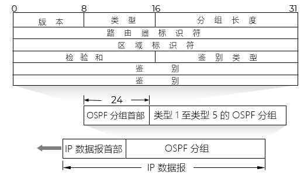
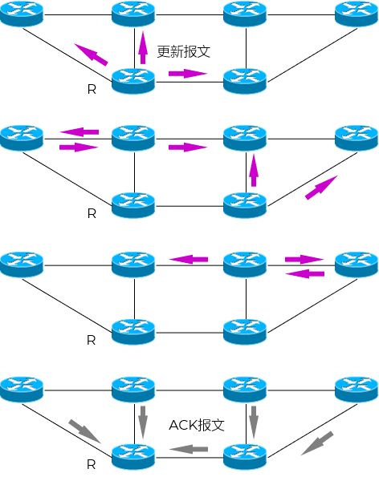
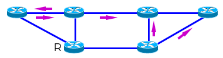
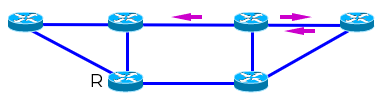
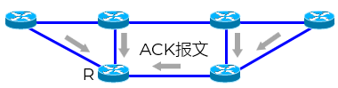
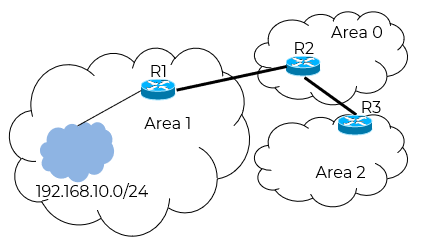

开放最短路径优先
@OSPF- 概述 Overview
- OSPF Open Shortest Path First，开放最短路径优先
- 内部网关协议 IGP，用于在单一自治系统 AS 内路由选择
- 基于 链路状态协议 LCP - Link State Protocol，路由器会收集并维护整个网络的拓扑信息
Dijkstra 算法
- 交换的是链路信息；不是路由信息
描述自己连接的网络，以及它与邻居之间的链路状态及开销 cost，具体由网络管理人员制定
是自己看到的局部拓扑
- 不使用TCP或UDP，而是直接封装在IP报文内，使用IP协议号89
- 支持VLSM：支持可变长子网划分和无分类编址CIDR
- 支持认证：提供简单密码认证和MD5认证
- 支持多路径负载均衡：最多支持等价多路径负载均衡
- 适用大型网络
- 分区管理 Area
- OSPF将网络划分为不同区域
减少链路状态数据库（LSDB）大小：每个区域维护自己的拓扑信息，不传播其他区域的详细拓扑
限制路由更新范围：链路状态通告（LSA）在区域内泛洪，跨区域需通过 ABR 汇总
提升网络可扩展性与稳定性
- 每个区域只知道本区域的网络拓扑
- 每个区域分配一个区域标识符 Area ID
32 位无符号整数
可以表示为一个十进制数，也可以表示为点分十进制形式
Area 0 → 0.0.0.0；Area 0 必须存在，是 OSPF 网络的骨干区域
Area 1 → 0.0.0.1
Area 51 → 0.0.0.51
- 区域类型 Area Type
- 骨干区域 Backbone Area (Area 0)：
连接所有其他区域的核心区域
所有非骨干区域间通信都要通过骨干区域 Area0 经区域边界路由器 ABR 转发
- 标准区域 Standard Area：常规的 OSPF 区域
- 末节区域 Stub Area：不接收外部路由信息的区域
- 完全末节区域 Totally Stubby Area：Cisco专有特性，只保留默认路由
- 次末节区域 NSSA：允许引入外部路由但不传播到其他区域
- 路由器类型 Classification
- 路由器可以具备多种身份
- 自治系统边界路由器 ASBR
Autonomous System Border Router
连接OSPF域和其他自治系统的路由器，如RIP
- 区域边界路由器 ABR
Area Border Router
连接连接不同 OSPF 区域
维护多个区域的LSDB
在区域间传递路由信息（通过Type 3 LSA）
不允许在不同区域之间直接交换Type 1/2 LSA
- 内部路由器 Internal Router
位于一个区域内部
所有接口都在同一区域内的路由器
- 骨干路由器 Backbone Router
至少有一个接口连接到骨干区域的路由器
- 特点 Features
- 邻接路由器又向它的邻接路由器发送
- 前面已经发送过的路由器，不会接收
- 构建链路状态数据库 LSD - Link State Database
- 每个路由器据此创建并维护自己的路由表
- 最后每个路由器都知道全网的网络特性
- 邻接路由信息
- 链路状态变化或根据定时触发



基本过程 Procedure
- 第 1 步：发送 Hello 报文（建立邻居关系）
- 通过 问候分组 Hello - 组播
- 所有邻居都可能跟自己交换链路状态信息
- 发现和维持邻站
- 每10秒交换一次
- 超过40秒没有收到邻站的问候分组，则认为该路由不可达；修改链路状态数据库并重新计算路由
- 建立邻接关系
- 在网络中选举DR - Designated Router和BDR - Backup Designated Router，网络内所有路由器只与DR和BDR建立邻接关系
不筛选 N*(N-1)/2
筛选 (N-2)*2+1
- 筛选邻居
只有建立邻接关系的邻居路由器才会交换链路状态信息
不是跟所有邻居都建立邻接关系
- 广播型网络中会选举DR和BDR，PPP网络中不会选举DR和BDR
- 第 2 步：交换 DBD（Database Description）报文
- 邻接关系确定后，泛洪向邻站发送 数据库描述分组 Database Description，给出自己所有的链路状态摘要信息
描述本路由器的链路状态数据库（LSDB）的摘要信息（即 LSA 头部）
用于比较两个路由器的 LSDB 是否一致
- 第 3 步：发送 LSR（Link State Request）报文
- 在交换完 DBD 后，如果某一方发现自己的 LSDB 缺少某些 LSA 或对方有更新的版本，就会发送 链路状态请求分组 Link State Request
- 每台设备都有一个链路状态数据库 LSD - Link State Database
- LSD 中每一条记录就是链路状态公告 LSA - Link State Advertisement
直连网络的链路状态信息
邻接路由器的链路状态信息
每个 LSA 条目每隔30min刷新，以防止老化过期
- 第 4 步：发送 LSU（Link State Update）报文
- LSA 被封装在 链路状态更新分组 Link State Update，采用泛洪 Flooding 向所有邻接路由器发送
- 采用触发更新 Triggered Update 和增量更新 Incremental Update
- 触发更新：一旦检测到网络变化，立即向受影响的邻居发送更新，不需要等待任何固定周期 - 最高效
- 增量更新机制，只发邻居需要的LSA
- 第 5 步：发送 LSAck（Link State Acknowledgement）报文
- 收到 LSU 后，立即发送 LSAck 报文进行确认
- LSAck 包含所确认的 LSA 头部（不含内容）
- 可单独发送，也可隐式嵌入在其他报文（如下一个 Hello 或 DBD）中
- 收敛以后，区域内所有路由器具有相同的LSD - 查漏补缺
- 体现全网的链路状态
- 网络中有哪些路由器，各自编号是什么，每台路由器直连的网段是什么，开销是多少
- 计算路由
- 路由器根据自己维护的LSD创建一个带权有向图
- 以自己为根，计算出最短路径树
- 最终得出自己的路由表
- R1 生成 Type 1 LSA，描述其接口和 192.168.10.0/24
- 在 Area 1 内泛洪给
其他 Area 1 路由器
ABR R2
Type 1 LSA：路由器自身链路状态，仅在本区域内泛洪。
- ABR R2 收到后：
在 Area 1 LSDB 中记录
生成 Type 3 LSA（汇总 192.168.10.0/24），泛洪到 Area 0
Type 3 LSA：由ABR生成，用于区域间路由汇总，可穿越多个区域。
- R3（Area 0 路由器） 收到 Type 3 LSA，将其加入路由表，知道去往 192.168.10.0/24 需经 R2
- 跨区域通信通过 ABR 的 Type 3 LSA 实现。
| 源IP | 目的IP：224.0.0.5 | 协议号：89 | OSPF首部 | OSPF分组载荷 |





| item | desc |
|---|---|
| Hello |
问候分组 |
| Database Description | 数据库描述分组 |
| Link State Request |
链路状态请求分组 根据摘要信息，请求信息的链路状态信息 |
| Link State Update |
链路状态更新分组 一旦路由状态发送变化，则使用泛洪全网更新链路状态 OSPF的核心 |
| Link State Acknowledgement |
链路状态确认分组 对链路状态更新分组的确认 |

启动OSPF
↓
发送/接收Hello报文
↓
发现邻居 → 建立邻居关系 (2-Way)
↓
(在需要的网络上选举DR/BDR)
↓
开始邻接形成过程 (ExStart → Exchange → Loading)
↓
交换DBD、发送LSR、接收LSU
↓
LSDB同步完成 → 建立邻接关系 (Full)
↓
(拓扑变化或周期性触发)
↓
生成/更新LSA → 通过LSU泛洪LSA → 全网LSDB同步
↓
触发SPF计算
↓
重新计算最短路径树
↓
更新路由表
| 特性 | OSPF | RIP |
|---|---|---|
| 路由协议类型 | 链路状态路由协议 | 距离矢量路由协议 |
| 管理距离 | 110 | 120 |
| 度量值 | Cost（带宽相关） | Hop Count（跳数） |
| 最大跳数限制 | 无限制 | 15跳（16跳视为不可达） |
| 收敛速度 | 快速收敛 | 较慢收敛 |
| 资源消耗 | 较高（CPU、内存） | 较低 |
| 适用网络规模 | 大型网络 | 小型网络（小于15跳） |
| 更新方式 | 触发更新 | 周期性更新（30秒） |
| 算法 | Dijkstra SPF算法 | Bellman-Ford算法 |
| 网络环路 | 无环路 | 可能产生环路（需水平分割等机制避免） |
| VLSM支持 | 支持 | RIPv2支持，RIPv1不支持 |
| 认证支持 | 支持（明文和MD5） | RIPv2支持，RIPv1不支持 |
Summary & Homework
- Summary
- 基于 链路状态协议 LCP - Link State Protocol
- 直接使用IP数据报泛洪广播
- 交换链路摘要信息
- 报文种类
Hello
Database Description
Link State Request
Link State Update
Link State Acknowledgement
- 时间
10s
30min
- Reading